Norway gives newcomers a great deal: paid language training, healthcare,
free schooling, child benefit, and a two-year programme built to carry you
into work. This guide sets out all of it, in detail, with the numbers.
It also sets out who it is offered to, and how people actually arrive.
Both halves of that are the welcome.
Most pages about Norway tell you either how generous it is or how hard it
is to get in. Both are true at once, and you cannot plan around one
without the other. So here is the shape of it, plainly, in the first
minute rather than the last.
The support is real
It is not a rumour and it is not exaggerated. Norway funds language
training, healthcare, schooling, child benefit and a structured
two-year introduction programme with a monthly income attached. The
figures are further down this page, each with its source.
It follows status, not arrival
Almost none of it is triggered by setting foot in Norway. It is
triggered by a legal status — a residence permit, a
grant of protection, registration in the national registry. Which
status you hold decides what you receive. Every section below says
which one unlocks it.
There is no visa for asylum
Norway does not issue asylum or humanitarian visas at its embassies.
A protection claim can only be made once you are in Norway or at its
border. This single fact reshapes every plan built on the assumption
that you can apply from where you are — so it is covered honestly in
Routes.
Why this guide is written this way
A newcomer who arrives with accurate expectations tends to do well here.
One who arrives on a promise that turns out to be false loses money,
years, and sometimes far more than that on the journey. Being straight
with you is not a smaller welcome than being enthusiastic. It is the
larger one.
02 Why Norway
لماذا النرويج
What makes the effort genuinely worth it
Moving countries is hard under the best conditions, and nobody should
pretend otherwise. So this section does not lean on adjectives. It sets
out, plainly, what a newcomer actually gets in exchange for the effort:
a society that is unusually safe, a labour market with real openings, a
landscape that is free to use, and a way of living where children and
family time are protected rather than squeezed.
Safety and trust, as a daily fact
Norwegians extend a level of everyday trust to strangers that surprises
most newcomers in the first weeks: doors left unlocked in small towns,
children walking to school alone, lost wallets that come back with the
money still in them. This is not naivety. It rests on genuinely low
violent crime, a police force that is rarely armed, and institutions —
courts, schools, hospitals, the tax office — that function the same way
for everyone, without a bribe changing the outcome. For a family that has
lived through the opposite, this is not a small thing. It is the
difference between planning your week around what might go wrong and
planning it around what you actually want to do.
That trust also runs toward newcomers. A written contract is treated as
binding on both sides, a public authority's decision can be appealed
and is genuinely reviewed, and a landlord or employer who breaks the law
can be held to it in practice, not just on paper. You do not have to
take this on faith — you will feel it in how ordinary transactions go.
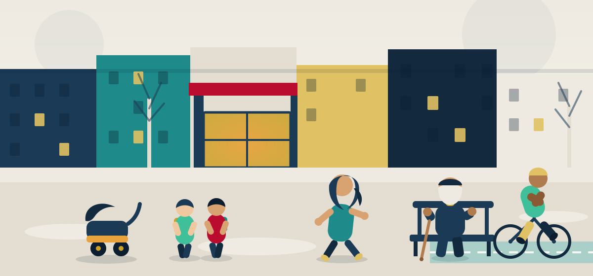
An ordinary street: a pram left outside the café, children walking to
school by themselves. Illustration
A labour market with real gaps in it
Norway measures unemployment two different ways, and they are not
interchangeable, so both are given here rather than one chosen to sound
better. The Statistics Norway labour force survey, which counts anyone
who tells a survey they are out of work and looking, put unemployment at
4.7% SSB, 2026.
NAV's registered count, which only counts people signed up at the
employment office as jobseekers, put it at 1.9% of the workforce in May
2026, or about 2.1% once adjusted for the season
NAV, 2026.
Neither number is wrong. They simply count different things — one a
household survey, the other an administrative register — and mixing
them up is the single most common way people misread the Norwegian
labour market. What both agree on is the direction: unemployment is low
by European standards, and it has stayed low for years.
Low unemployment coexists with real shortages, which is the part that
matters most to someone considering a move. NAV's own 2025 survey of
employers found Norwegian businesses short of roughly 39,000 workers —
down from about double that at the 2022 peak, but still substantial
NAV, 2025.
The shortage is not spread evenly. Vocational and skilled-trade
occupations account for about 16,850 of it, concentrated in mechanical
trades and in nursing and care work, and health and care occupations
alone account for a further 11,450
NAV, 2025.
Twenty-one percent of firms reported difficulty recruiting in the
previous three months, and the most common reason, given by 17% of
firms, was simply too few applicants
NAV, 2025.
For a tradesperson, a carpenter, a nurse or a care worker, that is a
market that is genuinely looking for you, not a market you are trying to
squeeze into. See Work for how qualifications from
abroad are recognised and where the friction points are.
Nature that costs nothing to use
Norwegian law gives everyone a right of access to most uncultivated
land, coast and forest, regardless of who owns it — you can walk, ski,
pick berries and pitch a tent for a night in most places without asking
permission. Fjords, mountains and forest are not a luxury reserved for
those who can afford a membership or a long drive; for most Norwegians
they are a short bus ride or a walk from the door. Families use this
constantly and without ceremony — a Sunday walk in the woods is treated
as an ordinary, almost obligatory part of family life, not a special
occasion.
Work that leaves room for a life
Norwegian working culture treats leaving on time as normal rather than
as a sign of low commitment. Long paid parental leave is standard, part
of it reserved specifically for fathers, and taking it is not held
against anyone's career. Meetings that run into the evening or contact
from a manager on a Sunday are the exception, not the rule. This is not
a marketing line — it shows up in how people actually structure their
week, and in how much of it is left over for children, for the outdoors
and, if it matters to you, for prayer and for community.
Illness and school do not bankrupt a family
Two of the costs that quietly ruin families elsewhere — a serious
illness and a child's education — are structured in Norway so that they
do not. Once you are a member of the national insurance scheme,
Folketrygden, healthcare comes with only modest co-payments per visit,
and once those payments reach an annual ceiling in the low thousands of
kroner, Helfo issues an exemption card automatically and the rest of the
calendar year is free
Helfo.
Children under 16 pay no co-payments at all, for GP visits, psychologist
appointments, outpatient care, X-rays, physiotherapy and prescribed
medicines on the reimbursement list
Helfo.
Schooling from roughly age six to sixteen is free, including books, and
the right to it applies to a child once it looks likely they will stay
more than three months — including children in the asylum process,
before any decision on the family's case has been made
Opplæringsloven, Lovdata.
None of this means every cost disappears — dental care for adults is a
real exception, covered in Healthcare — but the
two costs that most often push a family into debt elsewhere are, here,
ones a family does not have to fear.
The honest summary
None of this is charity, and none of it is automatic on arrival — the
rest of this guide is about exactly which status unlocks which piece
of it. But it is real, it is documented, and it is why people who
make the journey and stay tend to say, years later, that it was worth
it.
03 Routes
طرق الوصولراستے
How people actually come to Norway
This is the section most guides leave out, and it is the one that decides
everything else. Norway has several doors. They are not equally open, and
the one most people ask about first is the narrowest of them all. Here is
each route, what it genuinely requires, and how well it works — so that
you spend your effort and your money on the door that might actually open
for you.
The routes that open
Skilled worker permit — faglært arbeidstaker
Realistic · the main door
This is the route that most reliably works, and it is the one Norway
actively wants people to use. It requires a concrete job offer from one
named Norwegian employer, for a job that genuinely requires
skilled-worker qualifications — a trade certificate, a bachelor's or a
master's — which you must actually hold. Pay and conditions cannot be
worse than what is normal in Norway for that occupation and place, and
the work is normally full-time.
Where the job requires a degree, there are salary floors: from
1 September 2025, NOK 599,200 a year before tax for master's-level posts
and NOK 522,600 for bachelor's-level posts
UDI, 2025.
For vocational and trade positions there is no single fixed figure —
pay must instead match a collective agreement or what is normal for the
trade.
Straightforward cases are processed in roughly one to four months, and
the permit leads to permanent residence by the ordinary three-year
route. There is also a job-seeker permit of up to a year for skilled
workers without an offer yet — though time spent on it does not count
toward permanent residence
UDI.
Worth preparing for
UDI states openly that applications for vocational trades — cook, car
mechanic, carpenter, painter, bricklayer, hairdresser — and
qualification documents originating from a list of countries that
includes Pakistan receive extra verification and take longer
UDI.
This is not a refusal and it is not personal. It means: get your
documents authenticated early, expect the scrutiny, and budget more
time than the headline processing figure suggests.
Family immigration
Realistic · if you have someone here
If you have a spouse, parent or child already settled in Norway, this is
a real and well-trodden route. The sponsor normally has to meet an income
requirement — NOK 436,957 a year before tax for applications from
1 February 2025
UDI, 2025
— shown for the previous year and expected to continue for at least a
year ahead. For spouses and cohabitants, both parties must generally be
at least 24 at the time of decision.
There is an important exemption. Where the sponsor holds refugee status
or collective protection and the applicant is their spouse, cohabitant
or child, the income requirement does not apply — as
long as, for spouses, the marriage was entered into before the sponsor
came to Norway. This exemption is one of the most valuable things in
Norwegian immigration law, and it has a deadline attached that costs
families dearly every year. It is covered in full in
the next section.
Study permit
Open · but count the cost honestly
Study has carried a great many people into permanent lives in Norway.
You must show you can support yourself — NOK 15,488 a month, or
NOK 170,368 for a full academic year
UDI, 2025
— through loans, grants, your own funds in a Norwegian account, or a
deposit with the institution. The permit includes the right to work up
to 20 hours a week in term time and full-time during official holidays.
Exceeding those hours can cost you the permit, so do not.
Tuition is the part that changed, twice. From 2023 Norwegian public
universities were required to charge non-EEA students the full cost of
their programme — reported at roughly NOK 130,000 to NOK 390,000 a year
depending on the subject — and non-EU enrolment fell by around
80 per cent in two years. Then, from 1 August 2026, the law was changed
again to remove that requirement, leaving each institution to
set its own fee policy
Regjeringen, 2026.
What this means in practice now varies by university. Do not assume
either free study or a fixed price — write to the institution and ask.
The routes people ask about most, and how they really work
Seeking protection — asylum
No route to travel · claim only on arrival
There is no Norwegian asylum visa and no humanitarian visa. You cannot
lodge a protection claim at a Norwegian embassy, and UDI says so in its
own words: if you are not in Norway, you cannot apply for protection,
and "Norwegian authorities are not able to help you to travel to
Norway"UDI.
A claim can only be made once you are physically in Norway or at its
border, and since 15 July 2024 everyone applying must register in person
at the National Arrival Centre at Råde. Norway also takes part in the
European responsibility-sharing system — the Dublin rules, replaced by
the Asylum and Migration Management Regulation from 12 June 2026
UDI, 2026
— under which a claim can be transferred to the first participating
country you entered or the one that issued your visa. Because almost
every land or air route to Norway crosses such a country first, transfer
back is routine rather than exceptional.
What all of this adds up to is a hard truth stated kindly: the
protection system is real, and for some people it is generous, but
it contains no mechanism for getting you there. Anyone
who tells you otherwise — an agent, a broker, a confident relative — is
either mistaken or selling you something. The full process, the current
recognition rates and what happens for applicants from Gaza and Pakistan
specifically are set out in the next section.
UNHCR resettlement — kvoteflyktninger
The one lawful route from outside · and very narrow
This is the only way a person outside Norway can lawfully obtain
protection status there. It works entirely through UNHCR: you cannot
apply to UDI, UDI does not request named individuals, and you cannot
choose Norway as your destination. You approach a local UNHCR office;
UNHCR decides whether you qualify as a refugee and whether resettlement
is the only durable solution for you; and it may then refer your case to
Norway or to another state
UDI.
The scale is the part to understand. Norway's parliament sets the quota
each year. It stood at 3,000 places a year at its peak in 2016, 2017 and
2019; it was 1,000 in 2024; it fell to around 500 in 2025, prioritising
Syrians in Lebanon, Jordan and Turkey and Afghans with priority for
single women; and it has been reported cut sharply again for 2026
Regjeringen.
UNHCR has asked Norway to move toward 5,000 a year. It is worth
registering with UNHCR if you qualify — but plan your life on the
assumption that this door does not open, because for almost everyone it
does not.
Collective protection
Cannot be applied for
Norway's Immigration Act allows group-based protection in a mass-flight
situation, without individual assessment. It is a mechanism the
government activates, not a status anyone can request. It has been used
three times: for Bosnians in the early 1990s, Kosovo Albanians in 1999,
and Ukrainians from March 2022 — with nothing at all between 1999 and
2022
UDI.
It is currently being narrowed even for Ukrainians. It does not itself
lead to permanent residence, and it covers no other nationality.
One route that does not exist here
The EU Blue Card does not apply in Norway. Norway is
outside the European Union and is not a participating state, so there is
no Blue Card route and no equivalent fast-track. If you hold a Blue Card
from an EU country, it does not carry over. Norway's own skilled worker
permit is the route, and it is a good one.
04 Protection
الحماية واللجوء
If you are seeking protection
This section is for people who are already in Norway, on their way, or
weighing whether to try. It sets out how the process works, what the
outcomes have actually been, and the few things that make the largest
practical difference — including one deadline that separates families
every single year and is almost always missed for want of knowing about it.
How the process runs
Registration at Råde.
Since 15 July 2024, everyone applying for protection must attend the
National Arrival Centre at Råde in person to register. There is no
postal, online or embassy alternative.
Which country is responsible.
Before your case is examined, UDI decides whether Norway is responsible
for it at all. Under the European responsibility rules — Dublin, replaced
by the Asylum and Migration Management Regulation from 12 June 2026 —
responsibility generally falls on the first participating country you
entered or the one that issued your visa
UDI, 2026.
If that is another country, you are transferred there and your claim is
heard there instead. This is ordinary practice, not a punishment.
The fast track for some countries.
UDI states that if you come from a country whose inhabitants can get
help from their own authorities, your application will be rejected
within 48 hours
UDI.
Norway keeps its own list of countries treated this way.
Interview and decision.
Otherwise your claim is examined on its individual facts. You are
entitled to an interpreter, and this is free — ask for one in the
language you are most precise in, not merely one you can get by in.
Appeal.
A rejection can be appealed to the Immigration Appeals Board, UNE.
Free legal advice is available from the organisations in
Free help. Use it before you rely on anyone's
informal reading of your case.
What the outcomes have actually been
Norway's recognition rate swings sharply from year to year, because it is
driven almost entirely by who is applying. In 2024 the European Union
Agency for Asylum put Norway's recognition rate at roughly 73 per cent, a
figure shaped by Syrians, who were then granted protection at very high
rates. By September 2026, reporting on new UDI figures put it very
differently: of cases examined on their substance, around 22 per cent were
granted protection or residence on another basis and around 78 per cent
were refused
Utrop / UDI, 2026.
Both numbers are true of their moment. What changed between them was
Syria: after the fall of the Assad government in December 2024, UDI paused
and then reassessed Syrian cases, and in 2025 only 14 per cent of decided
Syrian claims were granted — 16 out of 112 — against 93 per cent for
Eritreans, 74 out of 80
Utrop / UDI, 2025.
The lesson is not that the system is arbitrary. It is that the single
biggest factor in any claim is the assessed situation in the country you
left, and that assessment can change faster than a journey takes.
For applicants from Pakistan
Recognition rates for Pakistani applicants are low across Europe. The EU
Agency for Asylum recorded roughly 11 to 15 per cent of Pakistani claims
granted at first instance across EU+ countries in 2024, and around
12 per cent in 2025
EUAA, 2025.
Pakistan is not treated as a country facing a general risk situation;
claims are assessed individually, and most do not succeed. We are not
publishing a Norway-specific percentage here because we could not verify
one directly — UDI publishes the figures by citizenship and outcome, and
you should read them yourself
UDI statistics.
If your situation is genuinely individual — a specific, documented,
personal risk — that is what the process exists to examine, and you should
get free legal advice rather than take anyone's discouragement as final.
But if the plan is economic, the skilled worker route in
Routes is not a consolation prize. It is a better
route, with a far higher success rate, that leads to the same permanent
residence.
For Palestinians and people from Gaza
Norway's treatment of this group, once a person is present, is relatively
favourable, and it is worth stating accurately. Stateless Palestinians
registered with UNRWA are assessed under Article 1D, second paragraph, of
the Refugee Convention together with section 28 of the Immigration Act,
under a standing UDI instruction — which means most people in that
category who are outside UNRWA's area of operations receive protection.
On Gaza specifically: the Immigration Appeals Board suspended the duty to
leave Norway for people from Gaza on 18 October 2023. That suspension was
lifted on 24 September 2025, but UDI and UNE stated explicitly that nobody
will actually be returned to Gaza — people who are finally refused but who
come from Gaza receive individual postponed implementation of removal,
given the security and humanitarian situation
UDI, 2025.
One change is worth knowing because it cuts the other way. After Norway
recognised the State of Palestine in May 2024, a ministry instruction of
17 October 2024 reclassified Palestinians holding Palestinian
identification as citizens rather than as stateless persons
UDI, 2024.
That removes the simplified route to citizenship that stateless people
had, and places them under the ordinary rules instead.
The part there is no kind way to soften
None of the above creates a way to reach Norway. Favourable treatment
on arrival is not the same thing as a route to arrival, and for people
in Gaza the gap between those two is not a technicality — it is closed
borders, no Norwegian asylum visa, and a European transfer system that
sends most claims back to the first country entered.
We are saying this plainly because the alternative is worse. People sell
journeys on the strength of exactly the favourable facts listed above,
and those journeys kill people. If someone is offering to get you to
Norway for money, the facts on this page are the ones they are using,
and they are leaving this paragraph out.
If protection is granted
A grant of protection is what unlocks nearly everything else on this site.
You are settled in a municipality by agreement with the integration
authorities, and that municipality becomes responsible for finding you
housing and offering you the introduction programme and Norwegian
training. From there the two-year programme in
The first two years begins, with an income
attached, and the health, schooling and family provisions in the sections
that follow apply to you.
The one-year deadline — act on this immediately
If you are granted protection and your spouse, cohabitant or children
are outside Norway, the income requirement for bringing them does not
apply to you — provided, for a spouse, that you married before you came
to Norway. But to keep that exemption, the application generally has to
be made within one year of your protection being
granted.
What counts for that deadline is the date your family member physically
attends the Norwegian embassy or consulate to give biometrics —
not the date they register online
UDI.
Appointment waits at some missions run to many months. Book the
appointment the week your permit is granted, not the month you feel
ready. UDI can excuse lateness genuinely outside your control, but do
not plan on being excused.
05 The first two years
برنامج الاندماج
The introduction programme: a structured start, with an income attached
Once someone has been granted protection and has been settled in a
municipality, Norway does not simply leave them to find their feet.
It offers a full-time, structured, up-to-two-year programme —
introduksjonsprogrammet — built around language, work and civic
life, and pays a monthly benefit for taking part in it. This section
sets out who qualifies, what the two years actually contain, and what
the benefit is worth in kroner.
Both a right and a duty
This is the detail people most often miss: the introduction programme is
not an optional course you can take or leave. Under the Integration Act
(integreringsloven, kap. 4), it is both a right
and a duty for people who have been granted protection
and certain of their family members, once they are settled in a
municipality by agreement
Integreringsloven, Lovdata.
That means the municipality must offer it, and the person is expected to
attend it, full-time, in the same way attending school is expected of a
child. It applies to people aged 18 to 55, a range extended to 60 by a
2025 amendment
Lov 2025-06-20-35, Lovdata.
The programme runs, as a main rule, for up to two years, and can be
extended to three in some cases — the exact conditions for a longer
programme are set case by case, so treat "usually up to two years,
sometimes three" as the reliable version and confirm your own situation
with IMDi rather than a fixed rule printed here
IMDi.
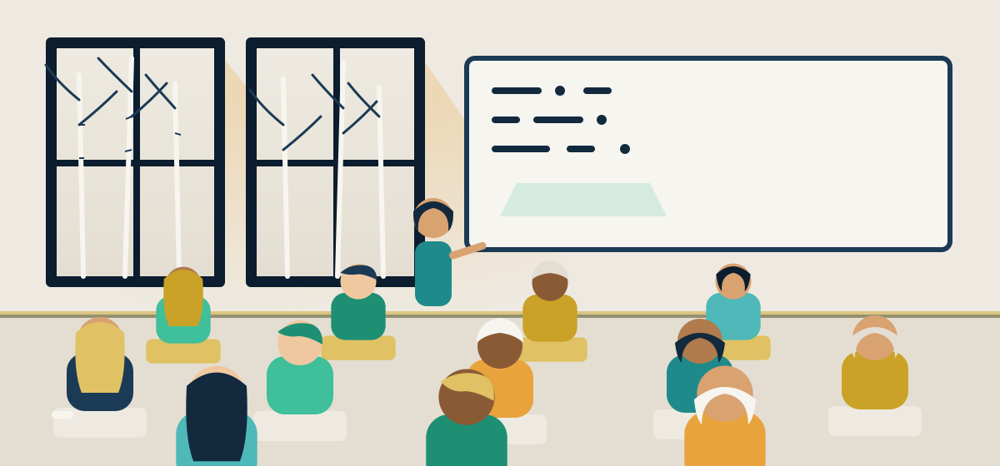
A full-time classroom, not a formality — this is a working week, not a
welcome pamphlet. Illustration
What the two years actually contain
The programme is full-time, and the law sets out five elements that must
all be part of it, though the mix is adjusted to the person
IMDi:
Norwegian language training — the largest single
component, building toward the level needed for work, study and,
later, permanent residence and citizenship.
Samfunnskunnskap (civic studies) — how Norwegian
society, law and institutions actually work, taught in a language the
participant understands.
Work- or education-oriented elements — work
placements, courses or a track toward qualification, aimed at
producing an actual next step into employment or study.
Livsmestring (life skills) — practical guidance on
managing daily life in Norway: finances, housing, health, the
systems people are expected to navigate on their own.
Foreldreveiledning (parental guidance) — for
participants with children, guidance on parenting and family life
under Norwegian law and expectations.
Settlement first. The municipality that has agreed to
settle you offers the programme; it is not available before
settlement and not triggered by simply being in Norway.
An individual plan. Content and pace are set for you
specifically — someone aiming at a trade certificate follows a
different path through the same five elements than someone aiming at
higher education.
Full-time participation, up to two years. Attendance
is tracked, much like a job, and the introduction benefit is paid for
the time you take part.
A possible third year. Extension to three years is
available in some cases, decided individually — ask IMDi or your
municipality about your own case rather than assuming either way.
The handover. The programme is meant to end in a job,
further education, or a clear next step — not simply to expire.
The introduction benefit — introduksjonsstønad
Participation comes with a monthly income, calculated as a multiple of
G, the National Insurance basic amount that many Norwegian
benefits are built on. From 1 May 2026 G is NOK 136,549
NAV, 2026.
The full rate of introduksjonsstønad is 2 × G a year — at the current G
that is NOK 273,098 a year, or roughly NOK 22,750 a month, before tax
NAV, 2026.
It is reduced for younger participants without their own household, as
the table below sets out.
Scroll the table sideways to see every column.
Introduksjonsstønad rates, calculated at G = NOK 136,549 (from 1 May 2026)
A 2024 law also reduced the rate for spouses or cohabitants without
children in some circumstances. The exact reduction is not something
this guide can state precisely, so treat it as: if you are a spouse or
cohabitant without children on this programme, ask your municipality or
IMDi for the figure that applies to you rather than assuming the full
rate above
IMDi, 2026.
Two things this benefit is not
Introduksjonsstønad is taxable, like ordinary income
— it is not a tax-free grant. It also does not build
pension rights in Folketrygden the way ordinary wages do. Budget for
both facts: the amount in your account after tax will be lower than
the gross figures above, and the years spent on the programme do not
themselves accumulate pension entitlement.
The one condition that matters most
None of this depends on when or how you arrived in Norway. It depends
entirely on two things happening first: being granted protection (or
qualifying as a covered family member), and being formally settled in
a municipality. A person still waiting for a decision on their case,
or not yet settled, is not yet in this programme and is not yet
receiving this benefit — see If you seek
protection for what applies before that point.
06 Money
المال
What you actually receive, and what unlocks it
Every figure in this guide is scattered through the section it belongs
to — health, family, housing, work. This page pulls the main cash
figures into one place, side by side, so you can see the whole shape of
it at once: what each payment is, who qualifies, and — the part that
matters most — what has to be true about your legal status before a
single krone is paid.
Where these numbers come from
These figures were compiled in September 2026 from published official
sources — NAV, UDI, IMDi, Lovdata, SSB and Regjeringen. Norwegian
benefit rates change often, usually once a year, and sometimes by law
mid-year. Do not treat any number on this page as fixed for your own
case.
Each figure carries a link to the body that publishes it. Government
sites reorganise their pages frequently, so if a link does not open
the exact page, go to that body's own site and search for the benefit
by its Norwegian name — the name is given for every payment on this
page for exactly that reason. The published figure at the
source always overrides the figure here.
The Norway-based sponsor of a spouse, cohabitant or child abroad
Sponsor's income, sustained for a year ahead — waived for refugee sponsors bringing a pre-arrival spouse or child, within a one-year deadline
Look down the "what unlocks it" column rather than the amounts, and a
pattern appears that runs through almost this entire site. Very little
here is paid because someone is present in Norway. It is paid because
of a status — protection granted, permanent residence
held, a sponsor already settled — or because of time —
years of residence, months of membership, a full year of income already
earned — or because of prior contribution — money
already paid into Folketrygden, work already done. Arrival starts the
clock on some of these. It does not, by itself, start the payment.
This is not a trick and it is not unique to newcomers. A Norwegian
citizen who has spent years abroad faces some of the same waiting
periods when they return. The rules exist to keep the system funded by
the people who have paid into it, and they apply by rule, not by
nationality. But the effect on a newly arrived family is real, and it
is worth naming plainly rather than discovering it by accident: your
first months and years in Norway will include real support — the
introduction benefit is a genuine, substantial income, and child
benefit is paid from day one of a child's residence — alongside real
gaps, where a payment other families receive is, for you, still years
away.
The introduction benefit and child benefit are the two payments most
newly arrived families can actually count on early, because they are
built around status and a child's residence rather than years already
served. The other four in the table above are built around time or
prior contribution, and that is where expectations most often go wrong.
The two residence-time bars that catch new families
Two of the rules above are worth stating twice, because they
specifically catch people who have just arrived, however secure
their status. Kontantstøtte requires five years of Norwegian
residence for non-EEA parents — a family granted protection
this year will not qualify for it on a child born or arriving this
year, only once that five-year clock has run. Engangsstønad
requires twelve months of continuous Folketrygden membership
immediately before the birth or adoption date — a family whose child
is born in their first year in Norway may miss this grant entirely,
through no fault of their own, simply because the clock had not yet
run far enough.
Neither of these is a reason to give up on either payment — both
become available once the time has passed, and the wait is worth
planning around rather than discovering the hard way. If a child is
on the way and neither benefit will apply yet, look instead at what
does apply immediately: the introduction benefit if you are in the
programme, child benefit once the child is registered, and the
family-related support set out in Children &
family.
07 Health & dental
الصحة والأسنان
Healthcare is close to universal. Adult dental care is not — and that gap deserves a clear answer.
Norwegian healthcare runs on national insurance membership, not on your
passport. Once you belong to it, most of medicine is either free or
capped at a modest yearly amount. Adult dental care works differently,
and it is the single fact about Norway that newcomers most often get
wrong. This section gives you both halves, plainly, so you can plan
around what is actually true.
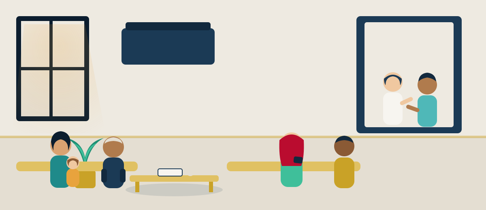
A municipal clinic on an ordinary morning — the same waiting room for
everyone registered there. Illustration
Who is covered, and from when
Membership of folketrygden, the National Insurance Scheme, is
what unlocks ordinary Norwegian healthcare — a GP, a hospital bed, a
specialist referral — on the same terms as a Norwegian citizen.
Membership becomes compulsory once you count as resident, which the law
defines as staying in Norway, or clearly intending to stay, for at least
12 months NAV.
Where that intention exists from the start, membership is backdated to
your date of entry rather than starting only once the 12 months have
passed.
People who have not yet reached that point are not left without care.
From the moment you seek protection until your case is finally decided
— granted or rejected — asylum seekers are covered by folketrygden's
health provisions in their own right
Helsedirektoratet.
In practice that means: full municipal health services, both physical
and mental (a GP, a health visitor, psychiatric help where needed);
specialist health services on referral, exactly as for anyone else;
necessary dental treatment; and a mandatory tuberculosis screening
shortly after arrival. This is real coverage, not a stopgap.
The one gap worth knowing about
Adults who live in, or have been offered a place in, a state
reception centre do not have a right to municipal
omsorgstjenester — the nursing and personal-care services a
municipality otherwise provides to people who need daily help. It is
a real and deliberate limit, not an oversight, and it matters most
for someone who arrives with a disability or a significant care need.
If that describes your situation, raise it with the reception centre
and with UDI directly, as early as you can.
What a visit actually costs
Once you are covered, most consultations still carry a small
per-visit co-payment, called an egenandel — at the GP, a
psychologist, an outpatient clinic, physiotherapy, or a pharmacy for
medicine on blue prescription. These payments are tracked
automatically and they are capped: once your co-payments in a
calendar year reach the annual ceiling — an amount of a few thousand
kroner — Helfo issues you a frikort (exemption card)
automatically, with nothing for you to apply for, and every further
covered visit for the rest of that calendar year costs nothing
Helfo.
The exact ceiling changes from year to year, so check Helfo's current
figure rather than relying on a number printed here.
Children under 16 are outside this system entirely: they pay no
co-payment at all, for a GP visit, a psychologist, an outpatient
appointment, an X-ray, physiotherapy or blue-prescription medicine
Helfo.
For a family with young children, this removes one of the largest
sources of everyday medical worry before it can even start.
Dental care — read this part carefully
Public dental care is genuinely free for children and young people:
every child and young person is entitled to it from birth through the
end of the calendar year in which they turn 18, at no cost
Lovdata, tannhelsetjenesteloven §1-3.
For young adults just past that age, the state also covers most of
the bill: since 1 July 2025, everyone aged 19 to 28 pays no more than
25% of the set fee for public dental treatment, with the public
service covering the rest — a bracket that was widened that year from
the previous 19–24 range
Helfo, 2025.
The claim you will hear, and why it is wrong for most new refugees
"Free dental care for adult refugees" is the single most commonly
repeated false claim about Norway, and it is worth correcting kindly
but exactly. A 2024 law excludes young adults holding a
temporary residence permit who have not yet lived
in Norway for five years from that 19–28 reduced-fee right, unless a
reciprocity agreement with their home country applies
Lovdata, 2024.
In practice, that means a newly arrived refugee aged 19 to 28 on a
temporary permit generally pays the full private-market price for
dental treatment until they have completed five years of residence
— the reduced-fee right catches up with them later, it does not
start on arrival.
Outside the categories above — children and young people up to 18,
and the 19–28 bracket once it applies to you — adults in Norway have
no general right to public dental treatment at all. Everyone else,
immigrant or Norwegian-born, pays a private dentist's price for
adult dental care. This is not a rule aimed at newcomers; it is how
dental care works for the whole adult population. The specific
thing to plan for is the five-year gap for a temporary permit
holder in the 19–28 bracket, because that is the exact point where
expectation and reality most often diverge.
None of this changes the larger picture: medical care in Norway is
close to universal, and the cost of getting sick here is bounded in a
way it is not in many countries. Dental care is simply the one corner
of the system where age, permit type and years of residence decide
the bill, and where it is worth budgeting for a private dentist in
the early years rather than assuming the state will cover it.
08 Learning
التعليم
School is free for your children. University can be free for you.
Norway treats education as infrastructure rather than a private
purchase. That is true from the first day a child sits in a classroom
to the day an adult graduates from university — and for people
granted protection, it is more generous than most newcomers expect.
Here is how each stage actually works, and what triggers it.
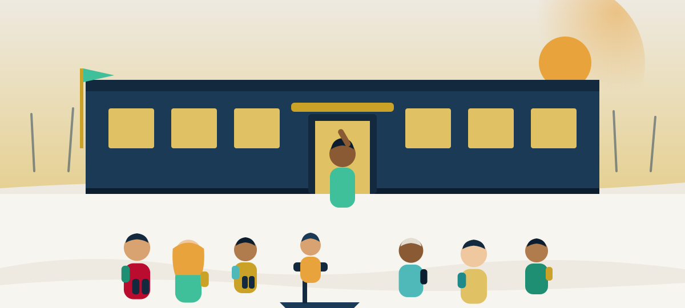
The end of the school day — a right that opens within a month of
arriving. Illustration
Children: school starts fast, and it is free
Grunnskole — primary and lower-secondary school, roughly ages 6 to 16
— is free, including books and materials. The right and duty to
attend is not tied to your immigration status; it is tied to a much
simpler test: once it is likely that a child will stay in Norway for
more than three months, schooling must be arranged, and it must
actually start within one month at the latest. This applies to
asylum-seeker children exactly as it applies to everyone else
Lovdata, opplæringsloven kap. 2Regjeringen.
A family does not need a final decision on their case before their
child is sitting in a classroom.
Adults: Norwegian, civic knowledge, and a route back into school
Adults covered by the introduction programme receive structured
Norwegian-language training alongside samfunnskunnskap —
civic studies covering how Norwegian society, work life and public
institutions actually function — delivered as 75 hours, offered
within one year of being offered a place
IMDi.
For adults who only hold the training duty without
the fuller entitlement — broadly, people who arrive through routes
other than protection — Norwegian-language training is capped at 225
hours. That figure is the current one under the integration law that
took effect in 2021; older, larger hour-figures you may see quoted
belonged to an earlier system and no longer apply.
Adults who missed out on secondary schooling are not shut out of it
permanently. Anyone aged 24 or over has a right to
videregående opplæring (upper-secondary education) if they
have completed grunnskole and do not already hold equivalent study or
vocational qualifications, under the restructured adult-education
framework that came into force on 1 August 2024
Lovdata, 2024.
For someone who left school early, this is a genuine second run at a
diploma, not a theoretical right that is never used.
University: the strongest positive on this page
Refugees study tuition-free — this is real, and it is unusual
Since autumn 2023, Norway has required its public universities to
charge tuition fees to students from outside the EU/EEA and
Switzerland
Regjeringen, 2023.
But there is an explicit exemption, and it covers most refugees
directly: anyone holding a residence permit granted on the basis of
protection, strong humanitarian grounds,
or special ties to Norway, and anyone holding
permanent residence, is exempt from those fees
Samordna Opptak.
In practice, a refugee applies and studies at a Norwegian public
university on the same tuition terms as a Norwegian citizen — free
— while another international student from outside Europe, without
that status, pays the full fee. That is a real, structural
advantage, and it is worth knowing before you assume higher
education is closed to you on cost grounds alone.
Fee policy for other non-EEA students has itself become less fixed
since 1 August 2026, when the legal requirement to charge them was
lifted and institutions were left to set their own policy — so if
you are advising a friend who does not hold a protection-based or
permanent permit, the honest answer is to check the fee the
specific institution now publishes, not to assume a fixed number.
Paying for it: Lånekassen
Tuition-free is not the same as cost-free — books, housing and daily
life still need funding — and here too the same group of permit
holders is treated as a Norwegian citizen would be. Foreign nationals
with lawful residence based on protection, strong humanitarian
grounds, or special ties to Norway can borrow and receive grants from
Lånekassen, the state education loan fund, on the same terms as
Norwegian citizens, and a specific
flyktningstipend (refugee grant) exists within that system
Lånekassen.
Lånekassen also publishes its explanatory material in Arabic,
Somali, Tigrinya, Farsi and several other languages, precisely
because it wants newcomers to be able to read the rules themselves
rather than rely on rumour.
Put together, this is a genuinely rare combination: fast, mandatory
schooling for your children regardless of where your asylum case
stands; a structured, funded route back into language and civic
knowledge as an adult; a real second chance at upper-secondary study
after 24; and a university system that, for refugees specifically,
removes the one barrier — tuition — that stops most international
students from ever enrolling. Very little of that depends on luck. It
depends on knowing it exists, and asking for it.
09 Children & family
الأطفال والعائلة
Money for children follows the child. Money around birth follows your history in the system.
Norway pays a monthly benefit for almost every child, no matter who
their parents are. But two of the other big family payments —
kontantstøtte and parental leave — are built on top of residence
years or prior income, and that changes what they mean for someone
who has just arrived. This section gives you the honest shape of all
four benefits together.
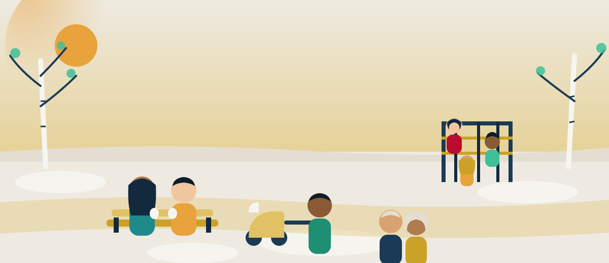
An ordinary afternoon in a city park — barnetrygd pays for a slice of
afternoons like this one. Illustration
Barnetrygd — child benefit, paid to almost everyone
Barnetrygd is a monthly, largely universal payment for every child
under 18, regardless of the parents' income. It is not a
refugee-specific benefit — it is simply what Norway pays for raising
a child here. A single parent receives a higher, "extended" rate, and
families with a very young child on that extended rate receive a
further small supplement. There is no separate, generally higher
rate for all children under 6 — despite what you may have heard,
the current structure does not work that way.
Extra per child, for families resident in Finnmark or Svalbard
Kontantstøtte — the one with the five-year wall
Kontantstøtte pays NOK 7,500 a month to families who choose not to
use a subsidised kindergarten place, but only for a child aged 13 to
19 months — a narrow window that was cut back from the previous 13–23
months in August 2024
NAV, 2024.
Say this plainly: it excludes most newly arrived refugees
Kontantstøtte carries a five-year residence requirement for
non-EEA immigrants, in force since 2017, and where a child lives
with both parents, both of them must individually
meet it
Lovdata, kontantstøtteloven §3a.
In effect, a family that has just been granted protection cannot
receive kontantstøtte for their first five years in Norway, however
young their child is. This is not a technicality worth glossing
over — it is the single biggest reason a newly arrived family's
experience of "family benefits" looks different from a settled
Norwegian family's.
Engangsstønad — the one-off payment, and a new condition on it
Parents who do not qualify for paid parental leave — most often
because they have no recent income from work — receive a one-off
payment instead, called engangsstønad, currently
NOK 92,648 NAV, 2024
per child. Since 1 October 2024, receiving it also requires that you
have been a continuous member of folketrygden for at least the 12
months immediately before the birth or adoption date
NAV, 2024.
For someone who has only recently arrived, that membership clock
matters as much as the payment itself — it is worth knowing the date
your folketrygden membership began, not just the date your child is due.
Foreldrepenger — paid parental leave, built on income you already have
Foreldrepenger, Norway's paid parental leave, is generous on its own
terms: 49 weeks at 100% of income, or 61 weeks and a day at 80%, with
NAV's contribution capped at 6G — six times the National Insurance
base amount, currently NOK 136,549
NAV, 2026,
so 6G is roughly NOK 819,000 of covered annual income.
The condition that matters here is not specific to refugees or
immigrants at all: foreldrepenger requires that you have built up
qualifying income from work before the birth. It is a general rule of
the scheme, applied identically to everyone. But its practical effect
on a newly arrived person is real and worth stating directly: someone
who has not yet had Norwegian earnings will typically not qualify for
foreldrepenger, and will fall back on engangsstønad — the one-off
payment above — instead, at least until they have built up enough
work history of their own.
Taken together, these four benefits are not one system but three
different logics stacked on top of each other: barnetrygd follows the
child, almost without condition; kontantstøtte follows years of
residence; foreldrepenger follows income you have already earned in
Norway. None of this is arranged to be unwelcoming — it is simply how
Norway extends a benefit built for a settled population to someone
who has just arrived. Knowing which logic applies to which payment is
the difference between planning well for a new baby here and being
caught by surprise.
10 Somewhere to live
السكن
Three different kinds of housing, in a fixed order
Where you live in Norway, and who is responsible for it, changes as your
legal status changes. A person waiting for a decision on their asylum
claim lives one way. A person just granted protection lives another way,
arranged for them. A person settled for a few years lives a third way,
arranged by themselves with public help behind it. Confusing the three
is the most common source of false hope on this subject, so they are
kept strictly separate here.
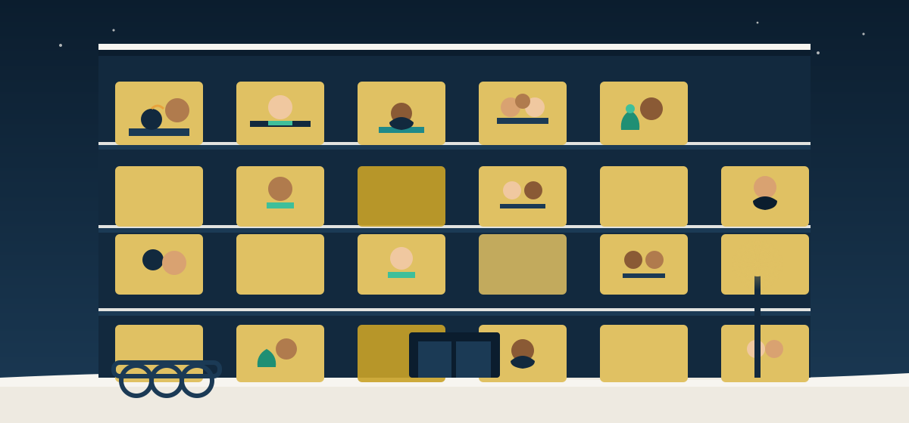
Moving in — the third stage, the one most families reach.
Illustration
While your claim is decided
Mottak — the reception centre
If you seek protection, UDI places you in a reception centre
(mottak) for the period your claim is being examined. This
status follows directly from having an asylum claim registered — it
is not something you apply for separately. The centre provides a
place to sleep, either food or the means to cook for yourself
depending on the centre, basic clothing and necessities,
interpreters, and organised Norwegian-language activities while you
wait.
Alongside this, residents living in — or formally offered — a
mottak place keep the right to a small cash allowance, the
basisbeløp. Do not treat any number you read for this
online as reliable: the rate is set by UDI, it is genuinely modest,
and it varies with the stage your case has reached, the type of
centre (ordinary, transit or emergency), and whether the centre
provides food or you cater for yourself. What is consistent across
sources is the payment rhythm — it is paid out twice a month, on
the 1st and the 16th.
Check the actual rate yourself
UDI publishes and updates the current basisbeløp rates directly.
Because this figure changes and is easy to misreport, this guide
deliberately does not print one — use UDI's own table before you
plan around any amount you have heard
UDI.
Once protection is granted
Bosetting — settling in a municipality
A grant of protection unlocks a different process: bosetting,
organised settlement in a municipality. Each year IMDi negotiates
with municipalities across Norway over how many people each will
take in, and a settlement agreement for you personally is reached
before any tenancy is arranged. You do not choose the municipality
in the way you might choose a city to move to on your own — it is a
negotiated placement, built around where places actually exist.
Once you are settled, the municipality that receives you carries
two responsibilities at once: it is responsible for finding you
somewhere to live, and it is responsible for offering you the
introduction programme and Norwegian-language training described
elsewhere in this guide
IMDi.
Housing at this stage is ordinary rented housing in the local
market, not a centre — the difference from mottak is real and
immediate.
There is an alternative: bosetting på egen hånd, finding
and arranging your own housing instead of waiting for a municipal
offer. People with family, a job lead, or savings elsewhere in
Norway sometimes prefer this route. It remains your choice either
way, and choosing it does not cost you your right to protection.
The years after
Ordinary housing — bostøtte and startlån
Once you are living in ordinary housing, two further supports exist,
neither limited to refugees, both worth knowing about early.
Bostøtte is a means-tested housing allowance,
administered through Husbanken, weighed against your household's
income and assets, your actual housing costs, and the size of your
household. It is not a fixed amount — the income ceiling that
decides whether you qualify, and how much you receive, varies by
household size and by region, so the only reliable way to know
where you stand is to check your own numbers against Husbanken's
current tables rather than someone else's example.
Startlån, also through Husbanken, is a loan aimed
at people who would otherwise struggle to get an ordinary mortgage
— it is explicitly available to refugees holding valid lawful
residence, assessed on the same needs-tested criteria as anyone
else who applies. Municipalities administer it locally, so the
practical route is through your local municipal housing office,
not a national application form.
The pattern worth remembering
At every stage, someone is clearly responsible: UDI for the centre
and the allowance while your claim is open, IMDi and the municipality
for finding you a home once protection is granted, Husbanken and the
municipality for support once you are settled and looking for
ordinary housing on your own terms. You are never simply left to
work it out alone — but which door you knock on changes as your
status changes, and knowing which stage you are in is most of the
battle.
11 Work
العمل
A labour market that is genuinely short of people
Norway's job market is not an abstraction you have to take on faith —
it is measured, published, and specific about where the gaps are. This
section sets out what the numbers actually say, and what tends to
separate the newcomers who move into good work quickly from those who
wait years for it: getting your qualifications recognised early, and
learning Norwegian fast.
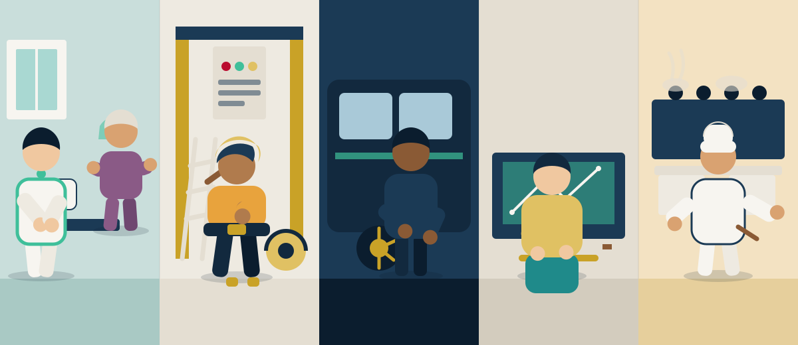
The two occupations with the deepest shortages: skilled trades and
care work. Illustration
Two ways of counting unemployment
Norway reports unemployment two different ways, and mixing them up is
the easiest way to misread the market. Statistics Norway's labour force
survey, which asks a sample of people whether they are out of work and
looking, put unemployment at 4.7%
SSB, 2026.
NAV's own register, which only counts people signed up at the
employment office as jobseekers, put it at 1.9% of the workforce in May
2026, or about 2.1% seasonally adjusted
NAV, 2026.
Neither figure is wrong; a household survey and an administrative
count simply capture different things. What both show is the same
direction — unemployment that has stayed low for years.
Where the shortage actually is
Low unemployment sits alongside a real, documented shortage of workers.
NAV's 2025 survey of employers, the Bedriftsundersøkelsen, found
Norwegian businesses short of roughly 39,000 workers — still
substantial, though down from about double that at the 2022 peak
NAV, 2025.
Twenty-one percent of firms reported difficulty recruiting in the
previous three months, most often because too few people applied at all
NAV, 2025.
Scroll the table sideways to see every column.
NAV Bedriftsundersøkelsen 2025 — reported shortage by area
That concentration matters: a tradesperson — a mechanic, a carpenter,
a bricklayer, a painter — or someone qualified in nursing or care work
is not competing for scarce openings in Norway. They are being looked
for.
How immigrants actually fare, honestly stated
The shortage is real, but it does not automatically translate into
equal outcomes, and this guide will not pretend it does. In 2023, 72%
of immigrant men and 64% of immigrant women were employed
SSB, 2023.
Behind that average is real spread: immigrants from the Nordic
countries and the EU/EFTA area are employed at or slightly above the
rate of the general population, while immigrants from Asia and Africa
are markedly lower. The gap between men and women is largest in the
first four years after arrival and narrows the longer someone has
lived in Norway
SSB, 2023.
Put plainly: the shortage in trades and care is real and it is large.
Whether any one person benefits from it fastest depends heavily on two
things within their control — getting a foreign qualification formally
recognised, and reaching working Norwegian quickly — and one thing
that time itself resolves only partially: the first few years are
harder than the ones that follow.
Getting a foreign qualification recognised
A trade certificate, nursing qualification or degree earned outside
Norway is rarely usable on day one. It generally needs to be formally
assessed and approved before an employer, or a regulator in a licensed
profession such as nursing, will treat it as equivalent to a Norwegian
qualification. Starting this process as early as possible — gathering
original certificates, transcripts and any available English or
Norwegian translations before you need them — is the single most
useful piece of practical preparation in this whole section.
For the skilled-worker route specifically, UDI is direct about where
extra scrutiny falls: applications in vocational trades — cook, car
mechanic, carpenter, painter, bricklayer, hairdresser — and
qualification documents originating from a specific list of countries
that includes Pakistan, alongside Bangladesh, China, India, Iran,
Kosovo, Nepal, Turkey and Vietnam, face additional document
verification and longer processing times
UDI.
This is not a judgment on any individual applicant, and it is not a
wall — it is a known, published friction point. Treat it as
preparation: have your documents verified and translated early, expect
the timeline to run longer than a straightforward case, and build that
time into your plans rather than discovering it midway through.
What actually moves people forward
Across everything above, the pattern repeats: people who get their
qualifications assessed early, who push their Norwegian past the
survival level as fast as they can, and who take real work in their
field — including work a step below where they started — tend to do
far better within a few years than people who wait for the perfect
opening while their documents sit unverified. The shortage is real.
Meeting it takes preparation, not luck.
12 The community
المجتمعکمیونٹی
An ordinary fifty-year history in Norway
On 1 January 2026, for the first time, more than 200,000 people were
registered members of a Muslim congregation in Norway — 201,899 people,
across 288 congregations, up 2.3% on the year before and up 14.7% since
2022
SSB, 2026.
That number needs one careful qualification before anything else: it
counts registered members, not everyone who considers themselves
Muslim. Many Muslims in Norway are not formally registered with a
congregation, and many children are not registered until later. SSB's
last full population estimate, from 2016, put the total considerably
higher with a wide and explicitly uncertain range
SSB.
This guide does not print a percentage of Norway's population that is
Muslim, because no reliable one exists. What is solid, and worth
sitting with, is this: in twenty years registered membership has nearly
tripled, from 72,000 in 2006 to today
SSB, 2006/2026.
That is not a story of a fringe. It is a story of a community that has
put down roots.
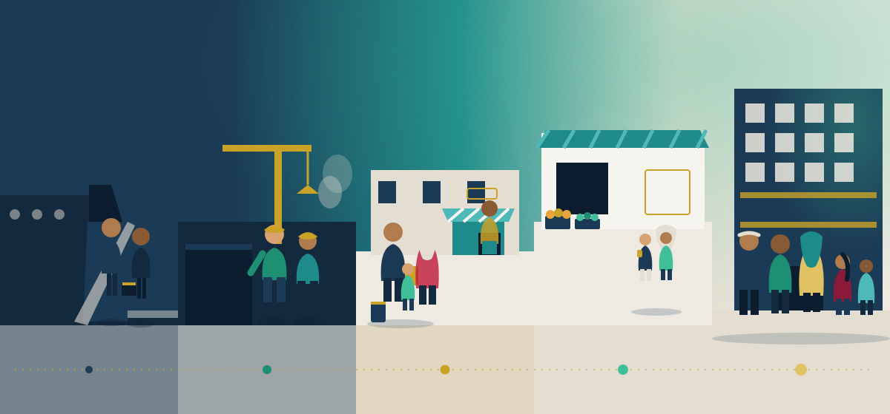
Grønland to Groruddalen: fifty years of one neighbourhood's growth.
Illustration
How it began
The story starts small and specific. In 1967 a handful of Pakistani
labour migrants arrived in Norway — around fourteen people, by the
registration count. By 1970 that had grown to roughly 110
norgeshistorie.no.
Then, in 1971, the numbers jumped sharply: somewhere between 600 and
800 people arrived in a single spring and summer, most of them single
men travelling alone, with NRK's own reporting putting the figure at
around 800 by that August
norgeshistorie.no.
The reason so many came in that one year is almost accidental: Denmark
and other European countries had already closed their doors to labour
migration by 1970, and for a short window Norway had not. Word travelled,
and people came while the door was still open.
It is worth saying plainly what those early years were actually like,
because the honest version is more respectable than a polished one.
Conditions were hard. Housing was overcrowded, and before anything
better could be arranged, some men lived in parks and campsites
norgeshistorie.no.
These were young men who had crossed a continent for work, with no
settled community waiting for them and no framework yet built to
receive them. What they built afterward — the mosques, the shops, the
neighbourhoods this section describes — they built largely from that
starting point, not from an easy one.
1967
The first Pakistani labour migrants arrive in Norway — a small
number, registered individually.
1970
Around 110 are registered. Denmark and other neighbouring countries
close their doors to new labour migration.
1971
The pivotal year: roughly 600–800 people arrive in one spring and
summer, overwhelmingly single men, drawn by a Norwegian labour market
still open when others had shut
norgeshistorie.no.
1975
The innvandringsstopp takes effect on 1 February, after the
1973 oil crisis. It ends new labour-migration permits — but it does
not stop family reunification, study, asylum or humanitarian
residence. That distinction matters more than the stop itself.
Mid-1970s onward
Growth shifts from single male workers to families. Wives and
children join husbands and fathers who had arrived before 1975 under
the family-reunification route that the 1975 stop left open. This is
the single mechanism that turned a workforce of men into settled
communities of families.
1970s–2000s
Settlement in Oslo begins in the inner east — Grønland, Tøyen, Gamle
Oslo, Grünerløkka — and spreads outward over the following decades
into Groruddalen (Stovner, Furuset) and Søndre Nordstrand (Holmlia)
norgeshistorie.no.
Who makes up the community today
The largest single group with roots in this history is Pakistani-origin
Norwegians: around 40,000 people in 2024, counting both immigrants and
people born in Norway to two Pakistani immigrant parents
SSB, 2024.
One figure inside that stands out. Of everyone with Pakistani
background in Norway, 45% were born here — the highest share of any
large immigrant group in the country
SSB, 2024.
Norwegian-born children of two Pakistani immigrant parents number
19,000 — the largest such second-generation group of any country of
origin in Norway
SSB, 2024.
Put plainly: this is not a community of recent arrivals. Nearly half of
it has never lived anywhere else. About half of Oslo's roughly 23,000
Pakistanis live in Groruddalen, the district the 1970s migrants' own
children and grandchildren built outward into
SSB, 2024.
Several other communities sit alongside this one, each with its own
story. Somalis number around 27,600 immigrants plus 16,400 born in
Norway to Somali immigrant parents
SSB.
Syrians, at around 40,700, are a mostly newer community, having arrived
largely after 2015
SSB.
Bosnians, at around 19,049 in 2023, arrived as refugees between 1992
and 1995 fleeing the war, and are widely cited by researchers as one of
Norway's clearest integration success stories — a generation that
arrived with almost nothing and is now simply part of the ordinary
fabric of Norwegian towns
SSB, 2023.
For Palestinian readers specifically, one recent administrative change
is worth knowing. After Norway formally recognised the State of
Palestine in May 2024, an immigration-authority instruction issued in
October 2024 reclassified people who hold Palestinian ID as citizens of
a recognised state rather than as stateless persons
UDI, 2024.
This is a genuine change in Norway's own paperwork, not a comment on
anyone's identity, and it alters which citizenship rules apply going
forward — the simplified path once used for stateless applicants no
longer applies in the same way. There is no reliable total count of
Palestinian-origin residents in Norway, so none is given here; anyone
affected should confirm their own situation with UDI directly.
Eid in a community hall — long tables, shared food, and families of
several origins in one room. Illustration
What all of this adds up to is a simple point that is easy to lose in
statistics: Muslim life in Norway is not a recent arrival grafted onto
an unfamiliar country. It is an established, multi-generational,
Norwegian story that happens to have started with a handful of men
looking for work in 1967. Their grandchildren now grow up speaking
Norwegian as a first language, and go to mosque, and go to school, and
do both without treating either as a contradiction.
13 Mosques
المساجد
Where the community actually meets
Norway counts 288 registered Islamic congregations nationally, most of
them small and local rather than large institutions
SSB, 2026.
A handful of Oslo mosques carry most of the community's documented
history, and each has its own story worth knowing before you arrive.
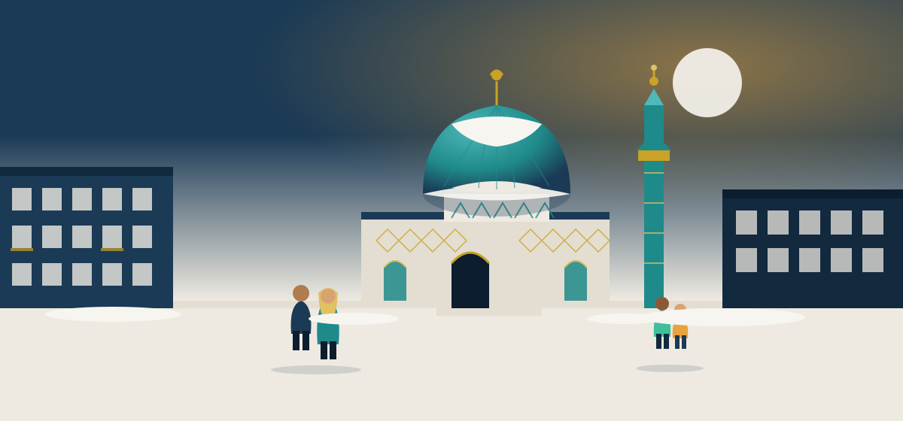
A dome and a minaret among ordinary Nordic apartment blocks. The point
is how unremarkable it looks on the street. Illustration
Oslo's founding mosques
Islamic Cultural Centre Norway
Bjølsen, Oslo — founded 1974
Founded in a private flat in Bjølsen by four Pakistani immigrants,
the ICC is generally regarded as Norway's first Muslim
congregation. It marked its 50th anniversary in 2024, and today has
around 3,500 members
Wikipedia (no).
Central Jamaat-e Ahl-e Sunnat
Grønland, Oslo — founded 1977
Founded as Anjuman-e Hanfia in 1977 and registered under its
current name in 1979, the congregation first met on Christian
Krohgs gate before buying a warehouse at Urtegata 11 around
1989–90, paid for through community fundraising. Its purpose-built
Jamea Masjid opened there in 2006 — 7,249 square metres, capacity
5,400, described as the largest mosque in northern Europe — and had
6,094 registered members as of 2018
Wikipedia (no).
World Islamic Mission — the Blue Mosque
Åkebergveien, Grønland — opened 1995
Known locally as Den blå moskeen, this was the first
building in Norway constructed from the ground up as a mosque,
designed by Norwegian architect Eigil Wæhle. Its two hexagonal
minarets and coral-blue facade — tiled with work from Iran and
Spain — have since been restored to their original colour
Wikipedia (no).
Det Islamske Forbundet — Rabita
Calmeyers gate, Oslo — founded 1987
Rabita was the first mosque in Oslo not organised around a single
national or ethnic group, moving into its own premises in 2004. Its
largest background group is Moroccan, and it had 3,318 members in
2018. King Harald V and Crown Prince Haakon visited the mosque on
19 October 2009
Wikipedia (no).
Minhaj-ul-Quran Norway
Tøyen → Enebakkveien, Oslo — founded 1990
Minhaj-ul-Quran began with just twenty to thirty people meeting in
two rented rooms in Tøyen in 1990. It has since grown into the
Minhaj Senteret on Enebakkveien
Wikipedia (no).
Beyond Oslo
Mosques now serve most of Norway's larger towns. Bergen Muslimske
Forening has more than 500 members. Trondheim's Mevlana Kultur Forening
recorded 1,509 members in 2018. Mevlana Moské in Stavanger and Drammen
Tyrkiske Islamske Menighet — the latter over 500 members — both serve
established Turkish-background communities, and Muslimsk Union i Agder
serves Kristiansand
SSB, 2018.
Some campaign sources publish precise mosque counts for Stavanger and
Kristiansand; this guide leaves those numbers out because they could
not be confirmed against an official register.
The umbrella bodies — an honest account
Two national organisations coordinate between mosques, and neither
story is simple, so both are told straight.
Islamsk Råd Norge (IRN) is the older and larger
umbrella body. In early 2017 it represented around 82,000 Muslims
through 42 member organisations. Later that year a serious trust
crisis broke out inside the organisation: several member congregations
left, and the Norwegian government halted its public funding
Wikipedia (no).
IRN reports that it has since reformed and now counts 80–85 member
organisations covering more than 75,000 people, though these are its
own, self-reported figures rather than an independent count
Islamsk Råd Norge.
It today runs the Hijri calendar function used to fix the start and end
of Ramadan, the IRN Halal certification mark, and the request forms
used for statutory Eid leave, covered below. This guide does not
present IRN as an uncomplicated success story — its 2017 crisis is part
of its real history and readers dealing with it should know that.
Muslimsk Dialognettverk (MDN) was founded in 2017,
specifically by five organisations that left IRN during that crisis:
the Islamic Cultural Centre, Rabita, the Bosnian Islamic community,
Center Rahma and the Albanian Islamic Cultural Centre. It represents
around 30,000 members today
Wikipedia (no).
Its existence is itself evidence of the fragmentation this section
opened with: 288 registered congregations nationally, most of them
small, local, and answering to different, sometimes competing, national
bodies rather than one central authority.
How mosques are funded, in law
Since 1 January 2021, a single law — trossamfunnsloven — has governed
state and municipal funding of every registered faith and life-stance
community in Norway on the same basis
Trossamfunnsloven, Lovdata.
The mechanism is a per-member grant, calculated so that funding per
member roughly matches what the state spends per member of the Church
of Norway. The rate was NOK 1,353 per member in 2022, NOK 1,554 in
2025, and NOK 1,611 in 2026
Regjeringen.no.
Only members holding a valid Norwegian national identity number are
counted toward a congregation's grant.
There is one honest asymmetry left in the system, and it is written
into the Constitution itself. Grunnloven §16, last amended in 2012,
guarantees freedom of religion to everyone in Norway and states that
all faith and life-stance communities are to be supported on an equal
footing — but it also names the Church of Norway specifically as the
country's folkekirke, the people's church
Grunnloven §16, Lovdata.
In practice, funding is equalised by ordinary law, as described above.
In the Constitution itself, only one church is named. That gap is
small in daily consequence and real in principle, and this guide would
rather note it than smooth it over.
14 Everyday practice
الحياة اليومية
Living an observant life, day to day
This section covers the practical questions newcomers ask most:
whether halal meat is really available, how burial works, where to
pray, whether Eid is recognised, and what the law actually says about
religious dress. Some of the answers are better than expected. A few
are more precise than the rumours suggest, and precision here matters
more than almost anywhere else on this site.
Halal slaughter — the part to get exactly right
How halal slaughter actually works in Norway
Norway has required animals to be stunned before slaughter since a
law passed in 1929, a requirement carried forward into the current
Animal Welfare Act of 2009. There is no religious exemption for
slaughter carried out inside Norway
Mattilsynet.
In practice this means Norwegian halal slaughter is a two-step
process: the animal is stunned first — electrically or with a
captive-bolt device — and Muslim-approved personnel then perform the
cut and the bleeding
Mattilsynet.
Most, but not all, Islamic authorities accept meat prepared this way
as halal; readers who follow a stricter view should ask their own
scholar. Separately, meat from animals slaughtered without stunning
may legally be imported into Norway and sold — around 30 tonnes of
unstunned halal meat and about 5 tonnes of unstunned kosher meat were
imported in 2019
Mattilsynet, 2019.
So: Norway does not simply "allow halal slaughter" — it requires
stunning first, with no exception. Nor does it "ban halal" — it
adapts it, and unstunned meat remains available through imports.
What this means for everyday shopping is straightforward. Halal retail
is well established in Norway's larger cities, with concentrated hubs
in Oslo's Grønland, Tøyen and Furuset neighbourhoods — butchers,
grocers and restaurants serving the areas the community has lived in
for decades. The genuinely notable fact is that halal meat is not
confined to those specialist shops. Nortura, Norway's largest meat
cooperative, produces its own halal-certified retail brand, Alfathi,
sold in ordinary mainstream supermarkets across the country. IRN Halal
is the certifying body behind much of this market. A newcomer does not
need to live in Grønland to buy halal meat — it is on the shelf in a
standard grocery store.
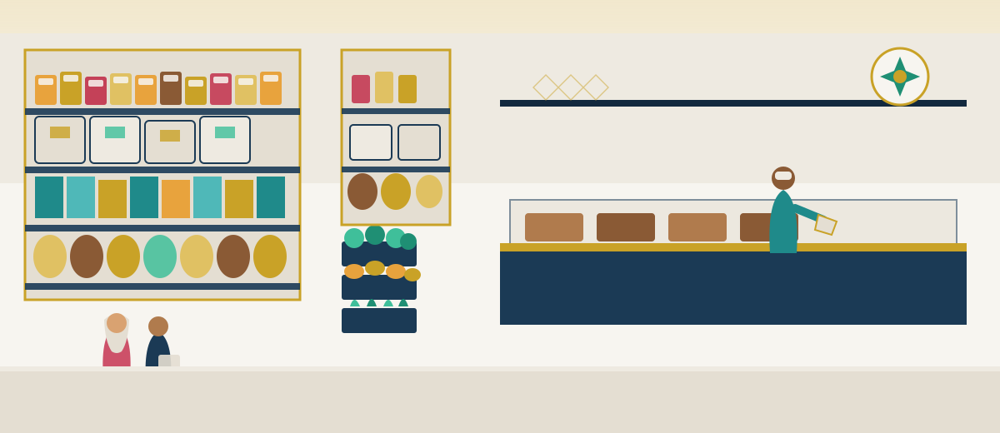
A halal grocery — though halal meat is no longer confined to
specialist shops.
Illustration
Burial
Norwegian law gives every resident the right to be buried in a way
that respects their religious conviction. Gravplassloven §1 places a
duty on municipalities to accommodate this as far as practicable, and
it has been built into real infrastructure rather than left as a
promise on paper
Gravplassloven, Lovdata.
Alfaset gravlund in Oslo's Alna district has direction-oriented graves
laid out so the deceased faces the correct direction, plus a separate
field for Ahmadiyya burials. Klemetsrud offers similar provision.
Dedicated Muslim funeral services, such as Muslimsk Begravelsesbyrå,
handle the practical and religious steps around a death for families
who need that support.
Prayer, on campus and in hospital
The University of Oslo has had dedicated prayer rooms with washing
facilities for wudu since the 1990s. OsloMet provides gender-separated
prayer rooms that have been expanded over time, and the University of
Bergen provides similar facilities. Beyond universities, Oslo
University Hospital runs a spiritual-care service covering ten
different faith and worldview communities, including a Muslim
chaplaincy, and St. Olavs Hospital in Trondheim has employed a Muslim
cultural consultant since 2010
Oslo University Hospital.
This is not symbolic provision — it is staffed, ongoing infrastructure
inside two of Norway's largest hospital systems.
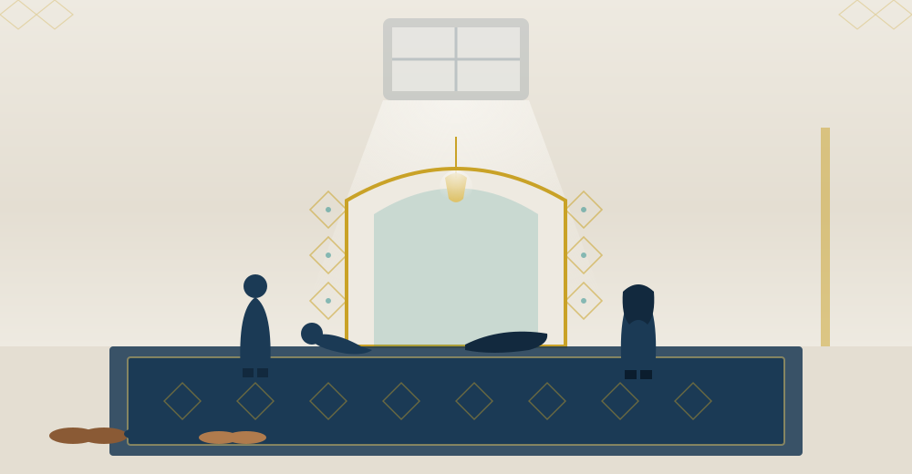
A prayer room — ordinary infrastructure on Norwegian campuses and in
hospitals. Illustration
Eid, and the leave that actually covers it
Eid al-Fitr and Eid al-Adha are widely and publicly marked in Norway.
Prime ministers, mayors and other officials routinely send public Eid
greetings, and the day is visible in public life. It is not, however,
an official public holiday, and understanding why that matters less
than it sounds requires knowing the actual mechanism behind it.
Arbeidsmiljøloven §12-15, the Working Environment Act, gives any
employee who is not a member of the Church of Norway a statutory right
to up to two self-chosen days of leave per year for their own
religious holidays — and it explicitly covers both Eid al-Fitr and Eid
al-Adha
Arbeidsmiljøloven §12-15, Lovdata.
You must notify your employer at least 14 days in advance. The leave is
in principle unpaid, but in practice most employers let staff work the
hours back rather than lose pay for the day — worth confirming with
your own employer, but not something to fear asking for. The same
right extends to school pupils, who may take the days as authorised
absence. IRN publishes request forms that make asking straightforward.
Halal finance
There is no fully sharia-compliant bank operating in Norway. One
mainstream bank, Storebrand Bank, is reported to offer an
interest-free home-loan product structured as a diminishing
occupancy fee rather than interest — the bank retains a shrinking
share of ownership as the customer buys it out over time. Other banks
have said they are considering similar products but have not launched
one. A 2016 report by the think tank Civita documented clear unmet
demand for these products among Muslim customers. If this matters to
you, ask directly — the market is small but it exists, and it is
worth checking what is currently on offer before assuming there is
nothing.
Religious dress, precisely
This is an area where rumour outruns the actual rule, in both
directions, so it is worth stating each piece separately.
The hijab is not banned in Norwegian schools, for pupils or teachers,
in most workplaces, or in the military — the government has explicitly
named the hijab as something the country's face-covering rules do not
touch. Face-covering garments such as the niqab and burqa have been
banned in education settings since August 2018: this covers pupils and
staff in kindergartens, primary and lower-secondary school, upper
secondary, folk high schools, vocational colleges, higher education and
integration-law training, but only during actual teaching situations,
with exceptions for pedagogical, health, weather or safety reasons
Opplæringsloven, Lovdata.
That rule should not be confused with a hijab ban — it is narrower,
and aimed specifically at face covering during teaching, not at modest
dress in general.
Two institutions draw the line differently from each other, and it is
worth knowing both. The police do not currently permit the hijab with
the uniform. The Police Directorate moved to allow it in 2008–09, but
the Ministry of Justice reversed that decision in 2009 after internal
opposition, and it remains the position today — though it stays a live
political debate, including a push from within the Labour party in
2024. This guide treats it as unsettled rather than closed. The
military, by contrast, has permitted the hijab, the turban and the
kippah with uniform since 1 July 2012, with the hijab worn tied close
to the head under issued headgear
Regjeringen.no, 2012.
Two Norwegian uniformed services, two different answers to the same
question — a real contrast, not a contradiction to paper over.
15 Family & law
الأسرة والقانون
Family life, and the law that surrounds it
Norway is, in practice, one of the most family-supporting societies in the
world — not in sentiment but in structure. It is also a society with firm
rules about how children are raised and how adults may be treated inside a
family. Newcomers do far better when they learn the second part early
rather than discovering it in a crisis, so this section covers both.
What Norway actively supports
A great deal of Norwegian policy exists to make it materially easier to
raise children. Parental leave is long and paid, and a portion is reserved
for the father specifically. Kindergarten is subsidised and capped, with
further reductions for lower-income families. Child benefit is paid
monthly for every child, to almost everyone, regardless of income.
Healthcare for children is free. School is free, including books. There is
no tuition to save for at sixteen and no medical bill to fear at two in
the morning.
The practical effect is that families here are not financially punished
for being families. Many newcomers notice this first not as a policy but
as an absence: the background dread about money and children that they
carried elsewhere simply is not there.
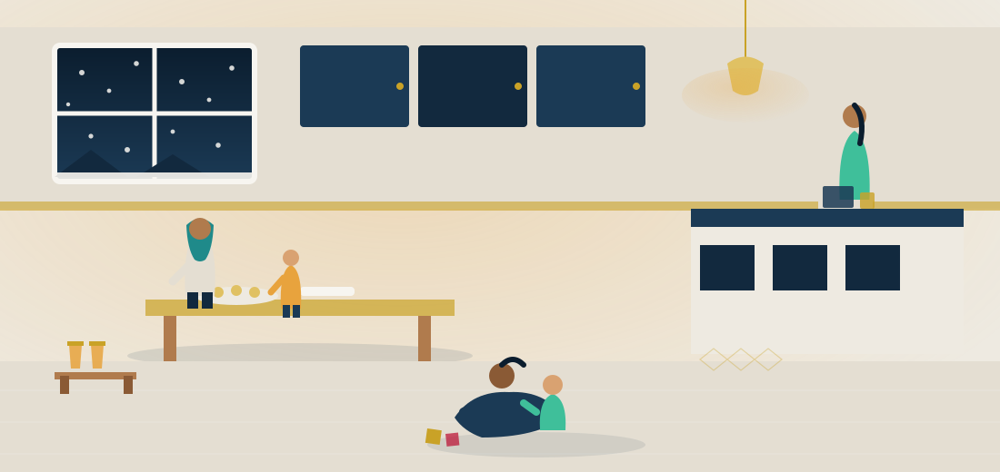
Three generations, one kitchen, a Norwegian winter outside.
Illustration
Religion in the family is protected
Raising your children in your faith is lawful and ordinary here. Families
teach their children to pray, to fast, to read Quran, to attend mosque
classes at the weekend. Schools accommodate religious observance. Nobody
is required to abandon their religion or their culture as a condition of
residence, and any suggestion otherwise is wrong.
Where Norwegian law is firm
There is a small set of rules that apply to every family in Norway without
exception, and they are enforced seriously. None of them is aimed at
Muslims — they apply identically to Norwegian families, and were fought
over domestically long before large-scale migration. But they sometimes
differ from what people are used to, and misunderstanding them causes real
harm.
Physical punishment of children is illegal. This
includes smacking. There is no level considered acceptable, and no
cultural or religious exemption. Norwegian parents are bound by exactly
the same rule.
Forced marriage is a criminal offence, as is arranging
one. Arranged introductions where both adults genuinely consent are a
different thing and are lawful; the line the law draws is consent, freely
given, by an adult.
Female genital cutting is a serious crime, including
when performed abroad on a child resident in Norway.
Violence inside a marriage is prosecuted like any other
violence, and a spouse's immigration status does not depend on staying
in an abusive marriage — there are specific legal protections on this
point, and free advice about them.
Children have independent legal rights, including the
right to be heard in decisions about them as they get older, and the
right to education.
Barnevernet — what it is, calmly
The child welfare service (barnevernet) is widely feared and
widely misunderstood in immigrant communities, so it is worth stating
plainly what it does. Its normal work is support:
advice, practical help in the home, financial assistance, respite,
counselling. The overwhelming majority of its cases never involve
removing a child. Removal happens in a minority of serious cases and
requires a decision by a formal tribunal, with the family entitled to
free legal representation and a right of appeal to the courts.
Two things help enormously: engage with them rather than avoiding them,
and ask for an interpreter — it is your right, and it is free.
Organisations listed in Free help assist families
navigating this and can attend meetings with you.
Equality law, honestly
Norwegian law guarantees equal treatment regardless of sex, religion,
ethnicity, disability and sexual orientation, and protects you and
discomforts you by the same clause. It is what makes it unlawful for an
employer to refuse you a job because you are Muslim or because you wear
hijab. It is also what means your daughter has the same legal rights as
your son, that a same-sex couple may marry, and that a woman may decide
whom she marries and whether she works. You do not have to agree with
every social outcome, and many Norwegians do not. You do have to live
within the law, as everyone here does.
Most families find less conflict here than they expected. Norwegian
society is, in its own way, quite conservative about the things that
matter to many newcomers: it takes children seriously, it protects family
time fiercely, it leaves work at the office, it values modesty and
restraint in public conduct, and it is deeply suspicious of ostentation.
Many people arrive braced for a clash and find instead a country that
guards the hours they want to spend with their children better than the
one they left.
16 What to prepare for
ما يجب الاستعداد له
The honest section, meant to help you prepare
Every earlier section in this guide has been about what Norway offers
and what unlocks it. This one is different on purpose: it is about what
actually gets hard, said plainly, so that none of it arrives as a
surprise. Difficulty named in advance is preparation. Difficulty
discovered alone, after you have already moved, is something much
worse. None of what follows is a reason not to come. It is a reason to
come ready.
The winter is about darkness, not cold
Most newcomers brace for the cold and are surprised by something else
entirely: the darkness. In the far north the sun does not rise at all
for weeks; even in the south, winter days are short and grey for
months. The cold itself is manageable — Norwegian buildings are built
and heated for it, and proper clothing solves most of the rest. The
darkness is the part that actually wears on people. What experienced
residents actually do about it is unglamorous and effective: they go
outside anyway, every day, even briefly and even in the dark; they
keep their homes and workplaces well lit; and they treat the light
that does exist, especially at midday, as something to use rather than
waste. It gets easier with a routine built around it, not around
waiting for spring.
Language decides more than anything else
If one factor determines how someone's first five years in Norway go,
it is Norwegian. Not English, however good yours is — Norwegian.
Workplaces, healthcare conversations, school meetings, and the
introduction programme itself all run on it. The genuinely good news
is that Norwegian is a learnable language, not an exceptionally hard
one, and that the training is paid for as part of the introduction
programme described earlier in this guide. The honest news is that
nobody can do the learning for you. Two people can sit in the same
classroom for the same hours and come out at very different levels,
because what happens outside class — practising with neighbours,
watching Norwegian television, forcing yourself off English at the
shop — matters as much as the class itself.
Housing costs money, and cities are competitive
Rented housing in and around the larger cities is in real demand, and
it takes effort to find something suitable, especially in the first
months in a new municipality. This is one reason the housing allowance
and start-up loan described earlier exist — bostøtte is worth checking
even if you assume you will not qualify, since the ceiling depends on
your own household size and region rather than a single number. Budget
for a competitive search, not an instant one, and treat the first flat
you find as a starting point rather than a forever home.
Norwegians are not unfriendly — they are reserved
New arrivals often read Norwegian reserve as coldness. It is closer to
a different rhythm. Small talk with strangers is not the norm, and
friendship tends to form slowly, and often through doing something
together — a sports club, a workplace project, a shared hobby, your
children's school — rather than through conversation on its own. This
is a real adjustment for people from more openly sociable cultures, and
it is worth naming clearly: it is not personal, and it is not a
judgment on you. Joining something with a regular reason to show up
again tends to work far better than waiting to be approached.
The employment gap, stated honestly
Work in this section has already covered this fairly, and it belongs
here too. In 2023, 72% of immigrant men and 64% of immigrant women in
Norway were employed, and immigrants from Asia and Africa were employed
at markedly lower rates than immigrants from the Nordic countries or
the EU/EFTA area, who sit at or above the general population
SSB, 2023.
The gap between men and women is at its widest in the first four years
and narrows with time in the country. This is a real gap, and it is
not distributed evenly by background. See Work for
what tends to close it fastest.
Discrimination exists, and it is documented
This has to be said plainly rather than softened. Norwegian research
into hiring has found that job applicants with distinctly Muslim names
face the highest level of hiring discrimination among the minority
groups studied. Separately, a report from the Center for Studies of
the Holocaust and Religious Minorities (HL-senteret) and IMDi found
that Muslims are the primary target group for hate crime and cultural
racism in Norway. In one youth survey inside that work, 67 of 90 young
Muslim respondents reported experiencing hate, discrimination or
exclusion for being Muslim, and around 25% of respondents in a broader
survey reported harassment in the past twelve months
IMDi/HL-senteret, 2023.
The Norwegian government ran a national action plan against
discrimination of, and hatred against, Muslims covering 2020 to 2023,
which is itself an acknowledgement that the problem is real rather
than imagined.
There is real recourse, and it is worth knowing before you need it.
Discrimination on grounds including religion and belief is unlawful
under the Equality and Anti-Discrimination Act
Lovdata,
and the Equality and Anti-Discrimination Ombud (LDO) is the body that
enforces it and takes complaints. This does not undo an unfair
experience, but it is a real, working, named channel, not a slogan.
Distance from family, and one deadline that matters
Being far from parents, siblings and old friends is simply part of
this move, and video calls narrow it without closing it. Where this
turns from an emotional cost into a legal problem is family
reunification. If you are granted protection and your spouse or
children apply to join you, the usual income requirement is waived —
but generally only if the family applies within one year of you being
granted protection. What counts is the date your family member
physically attends their appointment for biometrics, not the date of
any online pre-registration. This deadline is missed by real families
every year, usually because they did not realise how it was counted.
If reunification applies to you, treat this as the first thing to act
on, not the last.
What actually makes the difference
Across every section in this guide, the same three things separate
people who settle well from people who struggle for years:
Norwegian, pushed past the survival level as fast as possible;
qualifications recognised early rather than left untouched; and
taking real work when it is offered, even work below where you
started, rather than waiting for the ideal opening. None of this
erases the difficulties above. It is simply what the evidence in
this guide keeps pointing back to.
17 Questions
أسئلة شائعة
The questions people actually ask
These are drawn from the real questions newcomers ask — at embassies, in
mosque hallways, in family group chats. Some of the answers are not what
people hope to hear. They are given straight anyway, because a wrong
answer here can cost someone their savings, their years, or worse.
Can I apply for asylum at the Norwegian embassy in my country?
No. This is the most important answer on this page. UDI states
plainly that if you are not in Norway, you cannot apply for
protection there, and that "Norwegian authorities are not able to
help you to travel to Norway." A protection claim can only be made
once you are physically in Norway or at its border. There is no
asylum visa and no embassy procedure that gets you one
UDI.
The only lawful route into protection status from outside Norway
is a UNHCR resettlement referral, which is a completely different
process from asylum — you cannot apply for it yourself, and you
cannot choose Norway as the destination
UDI.
I am in Gaza. Is there a way to apply from there?
No, and this is worth saying kindly but clearly. Some of the rules
that apply once a Gazan reaches Norway are genuinely favourable:
stateless Palestinians registered with UNRWA are assessed under a
specific, protection-favourable provision of the Refugee
Convention and Norwegian law, and Norway has stated that no one
will actually be sent back to Gaza — even people finally refused
protection get their removal postponed given the security
situation there
UDI.
But none of that creates a way to reach Norway in the first place.
Gaza's closed borders, the absence of any Norwegian asylum visa,
and the rule that sends applicants back to the first European
country they entered all stand between favourable treatment on
arrival and arrival itself. Favourable treatment is not a route.
Will I be sent back to the first European country I entered?
Usually, yes. Norway takes part in the Dublin system, which from
June 2026 is replaced by a similar EU-wide framework (the AMMR),
covering the EU plus Iceland, Switzerland, Liechtenstein and
Norway. The general rule is that responsibility for your claim
falls on the first participating country you entered, or the one
that issued your visa. If you already applied elsewhere, or hold a
visa or permit from another covered country, UDI will normally
transfer you there instead of examining your case
UDI.
Because almost every land or air route into Norway crosses another
participating country first, this transfer is routine rather than
exceptional. Plan around it rather than hoping to be the
exception.
How likely is a Pakistani asylum claim to succeed?
Low. Norway does not publish an easily readable Pakistan-specific
figure, so this guide will not invent one. The best available
comparison is EU-wide: recognition for Pakistani applicants across
Europe ran at roughly one in eight to one in six in 2024 and 2025
EUAA.
Pakistan is not on Norway's own list of countries treated as
generally safe, so claims are examined case by case rather than
fast-tracked either way — check UDI's current published statistics
table for the exact figure
UDI.
The honest advice for a Pakistani reader is to look hard at the
work, study and family routes first — they
have real, published requirements that a qualified applicant can
actually meet.
Is dental care really free?
This is the single most common false claim about Norway, so read
this one carefully. Dental care is free from birth through the
year you turn 18
Tannhelsetjenesteloven, Lovdata.
From 1 July 2025, young adults aged 19–28 pay at most 25% of set
fees, with the public service covering the rest
Helfo.
But a 2024 law excludes young adults on a temporary
residence permit who have not yet lived in Norway for five years
from that reduced-fee right, unless a reciprocity agreement
applies. In plain terms: a newly arrived refugee aged 19–28 on a
temporary permit generally pays privately for dental care until
they reach five years' residence. Outside the age groups above,
adults have no right to public dental treatment and pay privately.
Anyone who tells you adult dental care in Norway is simply free is
wrong.
How much is the introduction benefit, and who gets it?
It is paid to people who have been granted protection (or qualify
as a covered family member) and have been formally settled in a
municipality — not to everyone who arrives. The full rate is 2 × G
a year, which at the current G (from 1 May 2026, NOK 136,549) is
about NOK 273,000 a year, roughly NOK 22,750 a month, before tax
NAV.
It is taxable and does not build pension rights. Under-25s not
living with a parent get two-thirds of that; under-25s living with
a parent get one-third
IMDi.
See the introduction programme for the
full breakdown.
Can my family join me, and how long do I have?
Yes, and if you hold refugee status or collective protection, the
usual income requirement is waived for your spouse, cohabitant or
child — provided, for a spouse, that the marriage happened before
you came to Norway. This is a genuinely strong right.
But it comes with a deadline that catches families every year: to
keep that exemption, the family must generally apply within
one year of you being granted protection. What
counts is the date your family member physically attends the
embassy or consulate for biometrics — not the date of an online
pre-registration. UDI can excuse lateness that was genuinely
outside your control, such as very long appointment waiting times,
but do not rely on that. Start the application as early as you
possibly can
UDI.
Do I have to give up my Pakistani or other citizenship?
No. Norway has permitted dual citizenship since 1 January 2020.
You do not need to renounce your previous nationality to become a
Norwegian citizen
UDI.
Whether Pakistan or another country in turn allows you to keep
your original citizenship is a separate question, governed by
that country's own law, not Norway's.
How long until permanent residence? Until citizenship?
Permanent residence normally requires three years of continuous
lawful residence, oral Norwegian at A2 or above, a social-studies
test, and evidence of self-sufficient income
(at least NOK 310,070 before tax in the last 12 months, 2025
figure, with exemptions for certain refugees)
UDI.
Citizenship's standard route is 8 of the last 11 years on valid
permits; it drops to 6 of the last 10 years with sufficient
income, or 3 of the last 10 years (with at least 1 year on a valid
permit) if you are married to, or in a long-term relationship
with, a Norwegian citizen sharing your home. Spoken Norwegian at
B1 is required
UDI.
A 2026 consultation proposes lengthening these periods, but that
is a proposal, not current law — check UDI before assuming either
the old or the new numbers apply to you.
What Norwegian level do I need?
It rises as your rights do. Permanent residence needs oral
Norwegian at A2 or above. Citizenship needs spoken Norwegian at
B1, a higher bar
UDI.
Course-hour documentation was dropped from 1 September 2025 — what
now counts is passing the test itself, not a certificate of
attendance. The introduction programme (see
above) is where most people build this
level, full-time, over up to two years.
Can I wear hijab at school, at work, in the police, in the army?
At school and in most workplaces: yes, without restriction — the
government explicitly named hijab as not covered by Norway's
face-covering ban. That ban targets niqab and burqa in teaching
situations only, with exceptions for health, safety or weather
Lovdata.
In the military: yes. Hijab, turban and kippah have been permitted
with the uniform since 1 July 2012, worn under issued headgear.
In the police: no. Hijab is not currently permitted with the
police uniform — a 2009 government reversal that still stands,
though it remains a live political debate. Do not assume it will
change; check the current position with the Police Directorate if
it affects your plans.
Is there halal meat in ordinary supermarkets?
Yes. Nortura, Norway's largest meat co-operative, produces a
halal-certified retail brand (Alfathi) sold in mainstream
supermarkets, not only in specialist shops. Halal retail is well
established, with particular concentrations around Grønland,
Tøyen and Furuset in Oslo.
One detail worth knowing: Norwegian law has required animals to be
stunned before slaughter since 1929, with no religious exemption
for slaughter carried out inside Norway. Norwegian "halal
slaughter" means the animal is stunned first and then processed by
Muslim-approved personnel under Islamic method — most, though not
all, Islamic authorities accept this. Meat from unstunned
slaughter may still legally be imported and sold
Mattilsynet.
Can I take Eid off work?
Yes. Any employee who is not a member of the Church of Norway has
a statutory right to up to two self-chosen days of leave per year
for their own religious holidays, explicitly covering Eid al-Fitr
and Eid al-Adha
Arbeidsmiljøloven §12-15, Lovdata.
You must notify your employer at least 14 days ahead. The leave is
in principle unpaid, though in practice many employers let staff
work the day back instead of losing pay. The same right applies to
a pupil's school absence, and Islamsk Råd Norge publishes request
forms.
Will my children be taught Christianity at school?
They will be taught about it, alongside other religions and
philosophies of life, in a subject called KRLE — Christianity
occupies roughly half the subject's teaching time by design
Lovdata.
A full exemption from the subject's knowledge content is not
available. What does exist is a partial exemption:
on written parental notice, a pupil can be excused from specific
activities they experience as practising another religion or find
offensive on that basis — a mosque visit is one thing, praying a
Christian prayer is another. Pupils aged 15 and over may request
this themselves.
Is there an Islamic school?
No, and it is better to know this plainly than to discover it
later. There is currently no operating Islamic private
primary or secondary school in Norway. One, Urtehagen, ran from
2001 to 2004 and closed after a critical government inspection
report. A 2014 application by a parents' group was approved by
the Directorate but then overturned by the Ministry after the
municipality appealed.
What does exist, almost everywhere there is a mosque, is
supplementary weekend schooling — Arabic literacy, Quran, Islamic
history and ethics — running alongside ordinary state school
rather than instead of it.
Can I study for free?
If you hold a permit based on protection, strong humanitarian
grounds, special ties to Norway, or permanent residence: yes,
tuition-free, at a time when most non-EEA international students
now pay full-cost fees — a genuinely strong benefit
Regjeringen.
Grunnskole (roughly ages 6–16) is free for every child, refugee
status or not, once it is likely they will stay more than three
months
Lovdata.
For other non-EEA students, the picture changed again in August
2026: the legal requirement that universities charge full fees was
lifted, and institutions may now set their own policy. So if
tuition-free study does not apply to your status, ask the specific
institution what it currently charges rather than assuming a
fixed number.
What does it cost to live while I study?
For a study permit, you must show you can cover NOK 15,488 a
month, or NOK 170,368 for a full academic year (2025 figures),
through loans, grants, your own funds in a Norwegian account, or a
deposit with the institution
UDI.
If you hold a permit based on protection, strong humanitarian
grounds or special ties, Lånekassen lends and grants to you on the
same terms as a Norwegian citizen, including a specific
refugee grant (flyktningstipend), with information brochures
available in Arabic among other languages
Lånekassen.
A study permit also allows part-time work up to 20 hours a week
during term and full-time in official holidays.
Is there a mosque in my city?
Almost certainly, if the city has any size. Norway has 288
registered Islamic congregations as of 2026, with major mosques in
Oslo, and established communities in Bergen, Trondheim, Stavanger,
Drammen and Kristiansand, among others
SSB.
See Mosques & institutions for named
addresses and histories.
What is barnevernet, and should I be afraid of it?
Barnevernet is the child welfare service, and it is widely feared
in immigrant communities well beyond what its actual work
justifies. Its normal work is support — advice, practical help at
home, financial assistance, counselling. Removing a child from a
family happens only in a minority of serious cases, requires a
decision by a formal tribunal, and comes with a right to free
legal representation and a right of appeal to the courts. See
Family & law for the full picture.
The two things that help most: engage with them rather than avoid
them, and ask for an interpreter — it is your right, and it costs
nothing. Several organisations in Free help
can accompany you to meetings.
Can someone get me a visa if I pay them?
No. This deserves an unambiguous answer: nobody can sell you entry
to Norway, a residence permit, or an asylum outcome. Norway issues
no asylum visa at all, and legal permits are decided on published,
checkable criteria by UDI — not by any private individual, agent
or "consultant," however confident they sound or however many
others they claim to have helped.
Anyone who offers, for money, to secure your visa, your asylum
grant or a guaranteed outcome is defrauding you. This is true
whether they contact you directly, through a relative, or through
a smuggling network dressed up as a travel service. Before paying
anyone, anything, for anything related to entering Norway, get
free advice from the organisations listed in
Free help — that is what they exist for.
18 Free help
مساعدة مجانية
Real organisations, and what they actually do
Every organisation on this page gives advice without charging for it.
None of them needs your money, and none of them can promise you an
outcome — what they can do is tell you, accurately and for free, where
you actually stand. If you take an interpreter to a public office, a
hospital, a police interview or a barnevernet meeting, that interpreter
is your right, and it is free. Nobody should ask you to pay for one, and
nobody should ask you to bring a relative instead when you would rather
have a professional.
It costs nothing
Every body listed below — government directorate or independent
charity — gives its core advice and casework free of charge. If
someone asks you to pay for what these organisations do for
nothing, stop and ask why.
They cannot guarantee an outcome
A lawyer, a caseworker or a volunteer can tell you the rules and
help you present your case properly. None of them can promise a
visa, a permit or an asylum grant — and anyone else who does is
not telling you the truth.
This site is not one of them
This guide explains the system. It cannot assess your case. For
that, use the real, named organisations below — that is precisely
the job they exist to do.
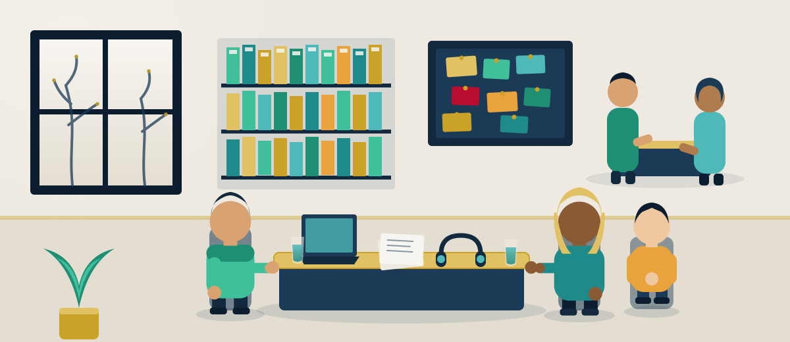
Advice that costs nothing, given by people whose job it is to give it.
Illustration
The official decision-makers
These are the government bodies that actually decide your case or
administer your benefit. Their own websites are the only reliable
source for current rules and figures — always check there before
relying on a number from anywhere else, including this guide.
UDI — the Directorate of Immigration
— decides asylum applications, residence permits, family immigration,
permanent residence and citizenship. The single most important
official site for anyone applying to come to or stay in Norway.
Husbanken
— the state housing bank: housing allowance (bostøtte) and start-up
loans (startlån) for people who cannot get an ordinary mortgage.
Helfo
— administers health co-payment ceilings, the frikort exemption card,
and the public dental-fee schemes.
Lånekassen
— the State Educational Loan Fund: student loans and grants,
including specific support for refugees, with information in Arabic
and other languages.
SSB — Statistics Norway
— the official statistics office. Every population, employment and
demographic figure on this guide traces back to SSB.
Free legal advice
These organisations give real legal help, from people qualified to give
it, without charging you.
NOAS — the Norwegian Organisation for Asylum Seekers
— independent legal counselling for asylum seekers, information
before and during your asylum interview, and advocacy on asylum
policy. If you are seeking protection, this is one of the first calls
to make.
Jussbuss
— a free legal aid clinic run by law students under supervision,
covering immigration, housing, debt, social welfare and more.
JURK
— free legal advice specifically for women and people who identify as
women, covering family law, immigration, employment and violence.
Norwegian Red Cross
— free legal information for asylum seekers and refugees alongside
its wider welcome and integration work.
Beyond legal casework, these organisations help with the everyday work
of settling in — language, orientation, food, and simply having someone
to ask.
Norwegian Red Cross
— language cafés, visitor programmes pairing newcomers with local
volunteers, and refugee guidance services across the country.
Caritas Norge
— practical help for migrants and refugees regardless of religion,
including counselling, information and support for people in
vulnerable situations.
IMDi
— also publishes plain-language information for people going through
settlement and the introduction programme.
Discrimination
Discrimination on grounds including religion is against the law in
Norway. If you believe you have experienced it, this is the body that
handles it.
LDO — the Equality and Anti-Discrimination Ombud
— the official body enforcing Norway's equality and anti-discrimination
law. Free to contact if you believe you have been discriminated
against at work, in housing, or in public services because of your
religion, ethnicity or sex.
Community bodies
Norway's Muslim community organises itself through a number of national
bodies. Presented honestly: they do useful, real work, and they have
also had real, public disagreements with each other — worth knowing
before you assume any one of them speaks for everyone.
Islamsk Råd Norge (IRN)
— the largest umbrella body, running the Hijri calendar function,
halal certification and Eid leave-request forms. It went through a
serious trust crisis in 2017 that cost it members and government
funding; it reports having since reformed, with 80–85 member
organisations today.
Muslimsk Dialognettverk (MDN)
— a second umbrella body founded in 2017 by five organisations that
left IRN, including the Islamic Cultural Centre and Rabita, now
representing around 30,000 members.
Nobody can sell you entry to Norway
No visa, no permit and no asylum outcome is for sale, by anyone, at
any price. An agent, "consultant" or intermediary who offers to
secure one for money — however confident they sound, however many
others they claim to have helped — is committing fraud. Free advice
from the organisations listed above is better than paid advice from
anyone who approaches you, every single time. If someone is asking
you for money for a visa, a permit, or a guaranteed asylum grant,
stop, and take the question to NOAS, Jussbuss or the Red Cross
instead — before you pay, not after.
19 Closing
ختاماً
A last word, from one side of the journey to the other
If you have read this far, you are doing the thing that most improves your
odds: you are gathering real information before you move, rather than
after. Whatever you decide, that habit will serve you better than any
single fact on this page.
Norway is a good country to build a life in. That is not marketing — it
is visible in the numbers throughout this guide: in the healthcare that
does not bankrupt anyone, in schools that cost nothing, in a child benefit
that arrives every month without anyone asking you to prove your worth, in
a language programme that pays you while you learn. It is visible in a
Muslim community more than fifty years old, with mosques its own members
built, in cities where your children will not be the only ones fasting in
Ramadan.
And Norway is genuinely difficult to enter. Those two facts sit together
and neither cancels the other. The generosity is real and the door is
narrow. Pretending otherwise — in either direction — has never helped
anyone pack a bag.
So the most useful thing this guide can leave you with is the shape of the
decision rather than a verdict on it. If you have a qualification, the
skilled-worker route is the one that actually opens. If you have a family
member settled here, the family route is real and well-trodden. If you can
study, the study route has carried a great many people into permanent
lives. If you are seeking protection, know how the process truly works
before you spend anything on a journey — and get free legal advice from
the organisations listed above before you rely on anybody's promise,
including a smuggler's, including a well-meaning relative's.
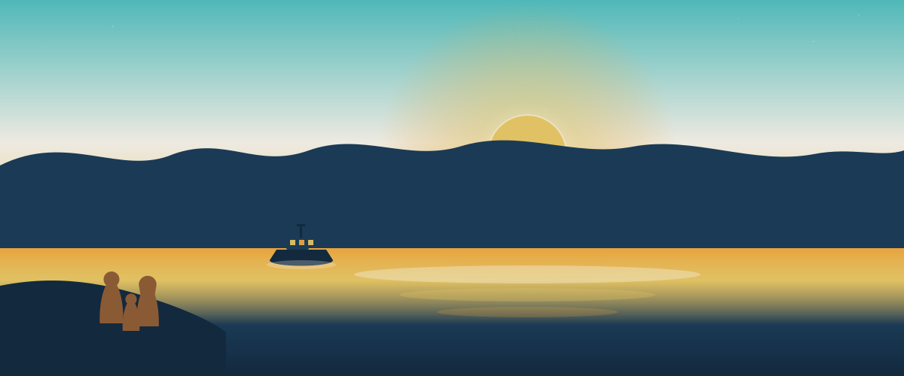
Dawn on the fjord. Illustration
If you take one thing
Check every figure on this page against the official source before you
act on it. Rules, thresholds and amounts change — often yearly, sometimes
mid-year. A guide is a map, not the ground. The links in
Free help go to the people whose job it is to know
the ground, and who will tell you for nothing.